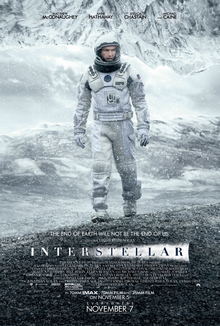

Interstellar
2014 • PG-13 • 2h 49m

Play TrailerIn a dystopian future where Earth has become near-uninhabitable, a team of astronauts embark on a mission to find a new home for humanity.
- Director Christopher Nolan
- Writers Jonathan Nolan • Christopher Nolan
- Stars Matthew McConaughey • Anne Hathaway • Jessica Chastain
Top rated movie #17 Won 1 Oscar 45 wins and 148 nominations total
Videos
Photos
Top Cast
- Matthew McConaughey
Cooper - Anne Hathaway
Brand - Jessica Chastain
Murph - Ellen Burstyn
Murph (older) - Mackenzie Foy
Murph (10 Yrs.) - John Lithgow
Donald - Timothee Chalamet
Tom (15 Yrs.) - David Oyelowo
School Principal - Collete Wolfe
Ms. Hanley - Francis X. McCarthy
Boots (as Francis Xavier McCarthy) - Bill Irwin
TARS (voice) - Andrew Borba
Smith - Wes Bentley
Doyle - William Devane
Williams - Michael Caine
Professor Brand - David Gyasi
Romilly - Josh Stewart
CASE (voice) - Casey Affleck
Tom - Director Christopher Nolan
- Writers Jonathan Nolan • Christopher Nolan
- All cast & crew
- Production, box office & more at IMDbPro
More Like This
Storyline
In the near future around the American Midwest, Cooper, an ex-science engineer and pilot, is tied to his farming land with his daughter Murph and son Tom. As devastating sandstorms ravage Earth's crops, the people of Earth realize their life here is coming to an end as food begins to run out. Eventually stumbling upon a N.A.S.A. base 6 hours from Cooper's home, he is asked to go on a daring mission with a few other scientists into a wormhole because of Cooper's scientific intellect and ability to pilot aircraft unlike the other crew members. In order to find a new home while Earth decays, Cooper must decide to either stay, or risk never seeing his children again in order to save the human race by finding another habitable planet.
Details
- Release date November 7, 2014
- Countries of origin United States • United Kingdom • Canada
- Official sites Official Facebook • Official Twitter
- Language English
- Filming locations Iceland
- Production companies Paramount Pictures • Warner Bros • Legendary Pictures